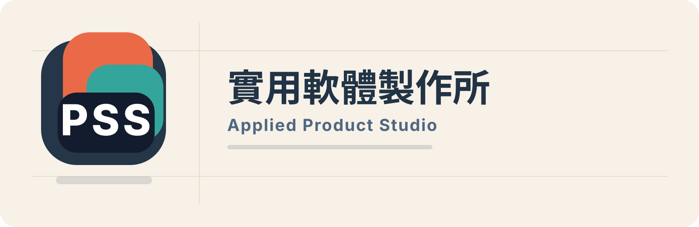
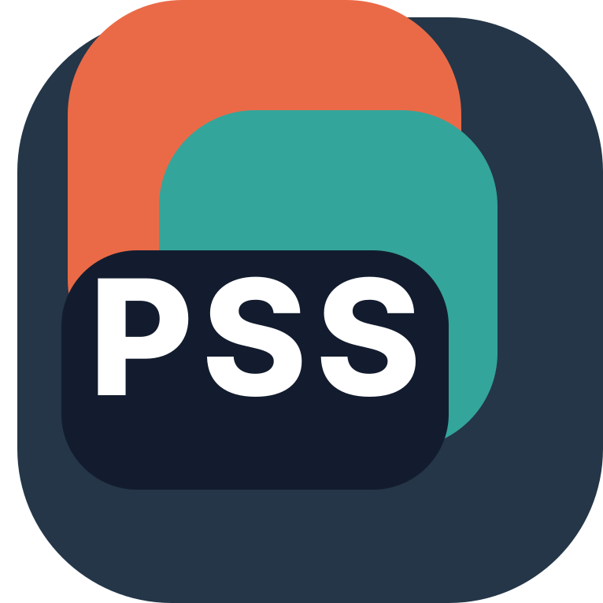

目前邊界
不是成熟 SaaS，也不是承諾服務多個產業。現階段只驗證痛點是否具體、頻繁、可安全測試，並用去識別範例或 checklist 進行窄範圍學習。

Email 描述卡點PSS Product Studio
PSS Product Studio 先研究流程痛點，再決定是否做產品。 目前聚焦文件密集、人工整理、缺漏追問、重複輸入與 human review（人工審查）交接。

Workflow scenes
B2B 文件流程場景用訪談、checklist 與去識別範例，先確認卡點是否值得小範圍驗證。
Observe / Interview / Validate / Human Review
目前邊界
不是成熟 SaaS，也不是承諾服務多個產業。現階段只驗證痛點是否具體、頻繁、可安全測試，並用去識別範例或 checklist 進行窄範圍學習。
Workflow Scenes
每個場景都只看一件事：是否存在清楚、重複、願意回覆，而且能用安全樣本測試的流程痛點。
Intake / missing information
Email、附件、表單或客戶需求進來後，先確認哪些欄位不完整、需要人工判斷或補問。
Order / shipment review
PO、品項、數量、交期、出貨資料與表格之間，哪些資訊常需要來回核對與重複輸入。
Support handoff
客服訊息、故障描述、訂單狀態、照片或服務紀錄，如何整理成下一位人員看得懂的脈絡。
Follow-up / requirements review
憑證、需求條件、變更訊息或待確認事項，是否能先用 checklist 降低反覆追問。
想看完整公開筆記？ 四個場景的延伸觀察與去識別脈絡整理在 Blogspot。
看 Blogspot 場景總覽Operating Method
PSS 目前用小範圍 discovery 來判斷哪個文件流程場景有更清楚的需求訊號。 先從公開資料、低壓力對話、checklist 回饋與去識別範例開始，不急著宣稱產品已成熟。
每個場景都先看痛點是否具體、頻繁、可安全測試，並確認 human review（人工審查）邊界是否清楚。 只有當對話與證據足夠時，才會討論窄範圍 pilot。
驗證階段不要求機密圖面、客戶資料、價格、成本或 ERP 匯出。去識別範例與流程訪談就足夠。
Public Notes
Blogspot 用來整理公開場景、去識別觀察與後續筆記；GitHub Pages 保留品牌定位、驗證方式與聯絡入口。
Contact
如果你的團隊正在處理 PO、附件、表單、客戶需求、缺漏補件、客服訊息或人工 review， 可以只分享流程背景與去識別例子。PSS 會先判斷是否值得進一步做 checklist、訪談或窄範圍 pilot。
第一次來信只要說明資料從哪裡來、哪裡需要人工整理、最常缺什麼，不需要附檔。
怎麼寄描述資料從哪裡來、卡在哪一步、誰需要人工整理。
不要寄不要附機密圖面、價格、客戶資料、ERP 匯出或未遮蔽檔案。
會怎麼回先判斷是否適合 checklist、訪談或小範圍流程驗證。